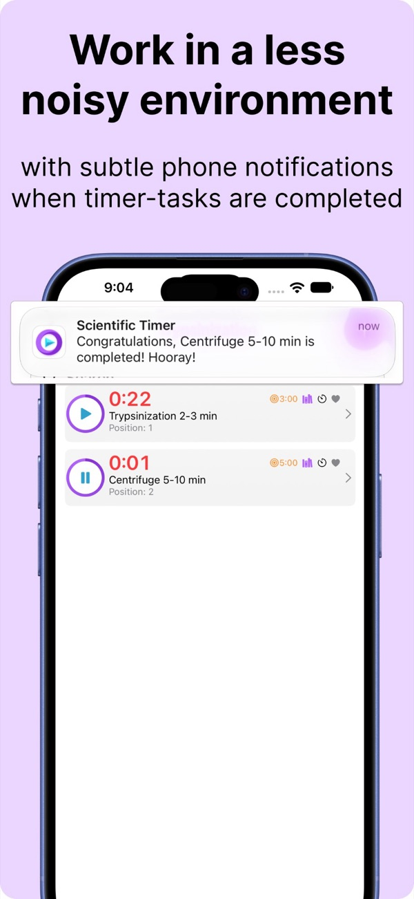
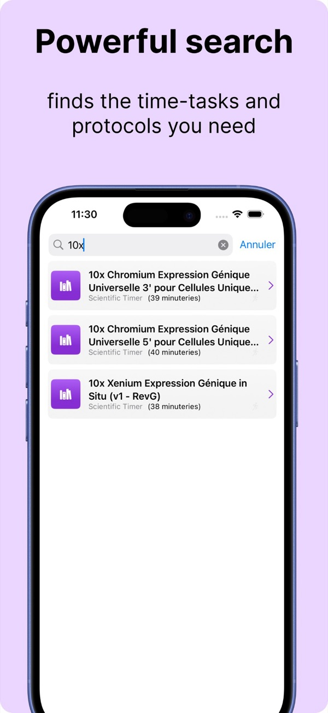
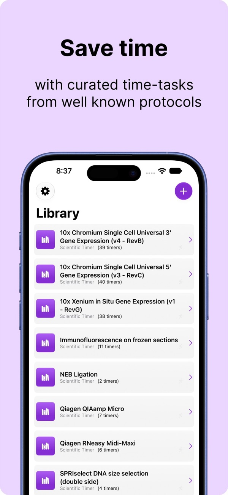

Scientific Timer
The productivity app for researchers. Break complex lab protocols into timer-tasks and run as many experiments in parallel as you need.
Download on theApp Store


The productivity app for researchers. Break complex lab protocols into timer-tasks and run as many experiments in parallel as you need.
Download on theApp Store
Designed for molecular and cellular biologists who juggle incubations, spins and washes across several experiments.



Scientific Timer doesn't collect any data. There's no account, no analytics, no ads and no tracking. Your protocols and timers never leave your iPhone.
Read the privacy policy →"I developed this app to help molecular and cellular biologists organize their experiments and be more productive in their research."Stéphane Boutet, Ph.D., creator and longtime bench scientist